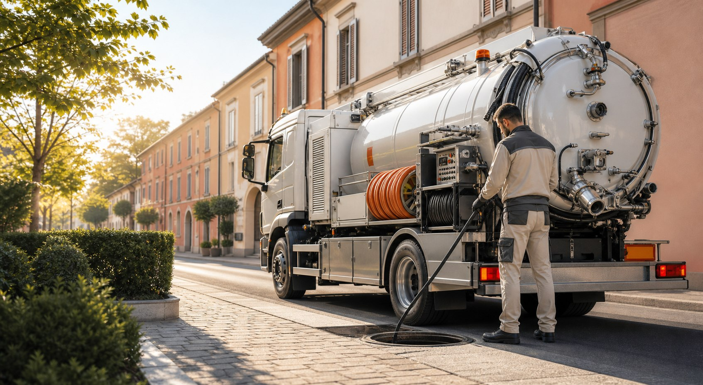

Reggio Emilia e provincia, H24
Spurghi a Reggio Emilia con cura, ordine e rapidita'.
Scarichi bloccati, fosse biologiche, pozzetti pieni e fognature in emergenza richiedono un intervento chiaro, non improvvisato. Organizziamo l'uscita in base al problema, all'accesso e al tipo di impianto.

H24
interventi urgenti
Come lavoriamo
Prima si capisce il problema, poi si interviene.
Chiediamo pochi dettagli utili: dove si trova il blocco, cosa succede agli scarichi, se ci sono odori o acqua che risale. Da qui scegliamo strumenti e mezzo adatti, con attenzione a cortili, parti comuni e ambienti di lavoro.
Servizi principali
I quattro interventi piu' richiesti.
Autospurgo
Autospurgo a Reggio Emilia
Per aspirazione, svuotamento e lavaggio di pozzetti, fosse e reti private.
Fosse biologiche
Spurgo fosse biologiche a Reggio Emilia
Pulizia e svuotamento prima che odori, rallentamenti o rigurgiti diventino un'emergenza.
Disotturazione tubi
Disotturazione tubi a Reggio Emilia
Scarichi lenti, colonne bloccate e linee esterne vengono trattati con strumenti adeguati.
Pronto intervento
Pronto intervento fognature a Reggio Emilia
Quando acqua, odori o reflussi non possono aspettare, serve una risposta rapida e concreta.

Controllo tecnico
Quando il blocco ritorna, serve guardare meglio.
La disotturazione risolve il sintomo, ma in alcuni casi conviene capire la causa. Depositi, radici, tratti danneggiati o pendenze non corrette possono far tornare il problema.
Citta' dove operiamo
Interventi anche nei comuni vicini.
Spurghi a Scandiano
Interventi per abitazioni, cortili, condomini e attivita' del territorio.
Spurghi a Correggio
Servizi di spurgo, autospurgo e disotturazione per case e imprese.
Spurghi a Carpi
Supporto per urgenze e manutenzioni su scarichi, pozzetti e fosse.
Spurghi a Rubiera
Interventi rapidi su reti private, scarichi lenti e pozzetti pieni.
Spurghi a Montecchio Emilia
Manutenzione e urgenze per immobili residenziali e professionali.
Spurghi a Cavriago
Soluzioni per scarichi ostruiti, fosse biologiche e reti esterne.
Spurghi a Albinea
Servizi ordinati per ville, abitazioni, cortili e condomini.
Spurghi a Bagnolo in Piano
Interventi su pozzetti, fognature e impianti privati.
Serve un intervento?
Chiama o invia una richiesta dalla pagina contatti.